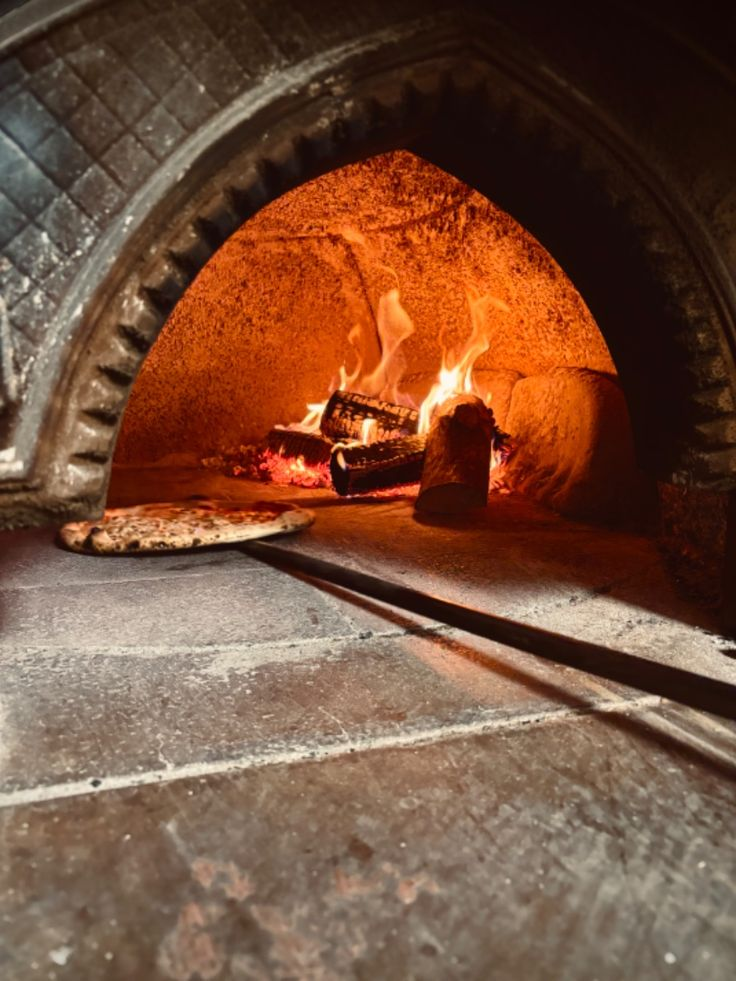
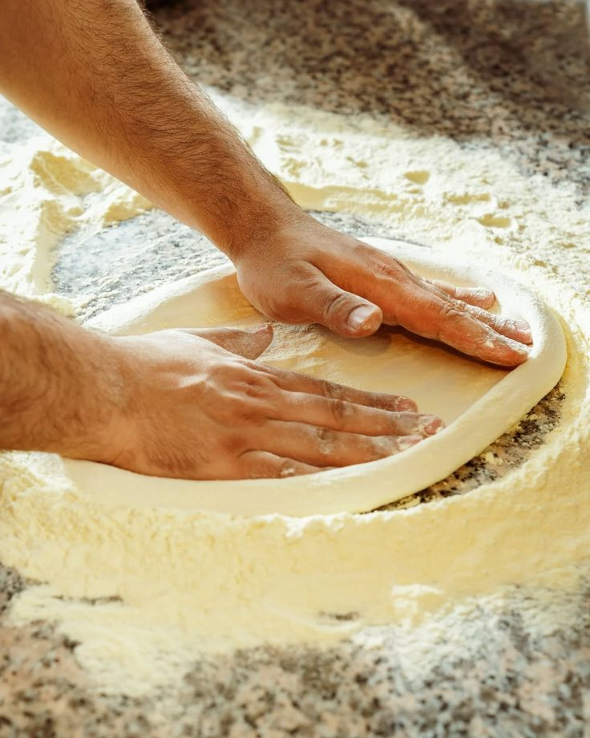

1978
Tommaso accende il forno
Tommaso, per tutti Tommy, apre una piccola pizzeria d'asporto con un forno a legna costruito a mano insieme al padre muratore.

La storia
Da una piccola pizzeria d'asporto di paese a un punto di riferimento per chi cerca la pizza fatta come una volta.
Scorri: ogni capitolo è un pezzo della nostra famiglia.
1978
Tommaso, per tutti Tommy, apre una piccola pizzeria d'asporto con un forno a legna costruito a mano insieme al padre muratore.

1995
Il locale si allarga: nascono la sala e i primi tavoli, e l'impasto a lunga lievitazione diventa quello di sempre.

2010
I figli di Tommy prendono in mano cucina e sala. Rinnovano il locale, ma la ricetta del padre non si tocca.

Oggi
Lo stesso forno del 1978, gli stessi gesti, e ogni tanto una pizza nuova in carta, sempre provata prima in famiglia.

“La ricetta non l'abbiamo mai cambiata. Il forno nemmeno.”Vieni ad assaggiarla